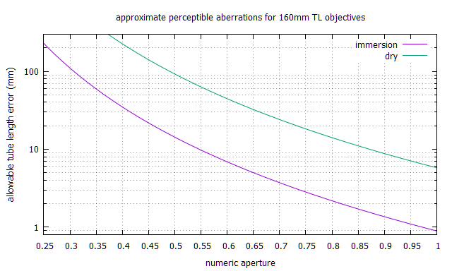

back

Microscope Basics
Another (pr68.com) attempt at basics
Aberrations - spherical, chromatic
Aperture - effective/working, equivalent, pupil ratio, vs numerical (N.A.)
Camera + Microscope Combinations
Canon EF DSLR sensor-to-flange depth
Compensating eyepieces or tube lenses
Condensers
Contrast and non-image-forming light: Kohler
Depth-of-Focus scaling
Diopter vs focal length
Finite tube length error impact on aberrations
Kohler illumination
Lens formulae
Magnification: Classic compound microscope
Nikon's extensive Interactive Tutorials
Objectives: finite vs infinity-corrected
Zerene focus stacking
1:4 to 8:1 magnification FAQ
Finite vs infinity-corrected objectives
To prime your thinking about lenses and ray diagrams, review
this explanation by Bill Otto.

Finite-conjugate microscope system vs. infinite-conjugate microscope system with tube lens.
from: Systematic design of microscope objectives
The vertical dotted line where rays cross at right end of tube length is called the objective's rear conjugate.
To the extent that it is, a finite objective's correction is designed for that tube length,
keeping in mind than many objectives also depend on both slide cover glass and eyepiece for correction.
More explanation
The upper diagram is supposed to represent a traditional (RMS == Royal Microscope Society) microscope.
"tube length" is approximately the objective's focal length for its specified magnification,
if that objective was a simple convex lens.
The lower diagram, which is nominally about more modern microscopes,
is arguably also more accurate for some "finite" microscopes,
if Objective + Infinity space + Tube lens are considered together as a compensated "finite" objective.
While infinity objectives can be used with a tube lens of any focal length,
specified magnification depends on that focal length.
Contrast and non-image-forming light.
While lenses can and do allow images to be focused on your retina,
they do not prevent other photons from also stimulating sensors.
When viewing a three-dimensional scene, perhaps focusing on a near object,
photons scattered from more distant objects may also land on the same photosensors.
Some non-image-forming light can be blocked by an iris diaphragm, as in this diagram:

Ignore that Microlens Array. Relay part is afocal photography, where Field Lens is the eyepiece or ocular.
Any number of websites will waste space pointing out how important it is,
then provide miserable, incomplete and wrong instructions.
Fortunately, Wikipedia does all right;
here are my Kohler experiences.
Lens formulae
simple
1/f = 1/do + 1/di {1} di becomes f for infinite do
m = di/do {2} zero magnification for lens focused @ infinity
magnification change by focus distance
f = (d2 - d1)/(m2 - m1); {3} alternatively:
d2 = d1 + f*(m2 - m1)
m2 = m1 + (d2 - d1)/f
magnification for classic (RMS) compound microscope
m = (L/fo)*(D/fe),
...where:
m = magnification
L = tube length (160mm)
D = normal vision relaxed distance (250mm)
f = focal length
fo = objective focal length
fe = eyepiece focal length
di = lens to image distance
do = lens to object distance
For 160mm tube length, a 10x objective has 16mm focal length
and a 10x eyepiece has 25mm focal length.
For infinity scopes, substitute "tube lens focal length" for "tube length".
Olympus infinity objectives expect 180mm tube lens focal length;
Nikon finite CF BD and M Plan objectives expect 210mm tube length.
Aberrations
Spherical lens surfaces are relatively easy to produce, but not ideal.
Combining different dispersions and
refractive indices can reduce lens aberrations.
Compensate vs correct
correction == positive correction in a downstream optic for upstream optic deficiency.
compensation == inverse correction in a downstream optic to cancel upstream optic over correction.
Chromatic Aberrations (CA)
Correcting optics display blue interior CA and yellow exterior CA; reversed in compensating optics.
Aperture
effective (working aperture)
Coupled lenses, stopped in the front, with the rear lens focused at infinity: m * lens aperture
Single lens, focused by extension: (m+1) * lens aperture
Teleconverter factor x inserted between camera and all other optics: x * lens aperture
Microscope objectives used as designed: m / (2 * N.A.)
equivalent
e.g. "How does a 4X N.A. 0.1 objective compare to an f/whatever macro lens?"
f=1/(2*N.A.) is not a bad approximation.
A better approximation would be f=1/(2*N.A.) * M/(M+1), where M is rated magnification.
"pupil ratio"
compensates effective aperture for adding extension
aperture vs N.A. : N.A. = 1/(2 * f/#)
| f/# | 1.2 | 1.4 | 1.8 | 2 | 2.8 | 4 | 5.6 | 8 | 11 | 16 |
| N.A. | .4167 | .357 | .417 | .25 | .1786 | .125 | .0893 | .0625 | .045 | .03125 |
Canon EF sensor-to-flange depth: 44mm
Add to extension tubes when testing lens focal lengths
Condensers: achro, aplanatic, Abbe; finite vs infinity
Tweaking Abbe condensers
Abbe flaws begin to bother above N.A. 0.6-7; elevate an Abbe to optimize filling the objective's back lens.
DoF2 = DoF1 * (f/#2/f/#1) * (m1/m2)**2
Diopter vs focal length: divide into 1000mm, e.g. diopter = 2 for 500mm fl
magnification m = sensor width / frame width
DoF (mm) = 0.0022*(((m+1)*f/#)/m)**2
DoF (mm) = 0.00055/(N.A.**2)

Finite tube length error impact on aberrations
Tolerance goes inversely as NA^4;
a NA 0.25 160 TL immersion objective tolerates over 200 mm of additional tube length before problems.
A NA 0.65 160 TL immersion objective tolerates 5mm tube length error.
More tube length discussion: Raynox DCR-150 tube assembly with flocking

gnuplot
I speculate that zero slide cover objectives might be usefully more tolerant than dry.
Systematic impact suggests that modest aberrations (e.g. from wrong slide coverslip)
could be mitigated by deliberately changing tube length...
This would provoke magnification change and refocusing inconvenience.
Compensating eyepieces or tube lenses
Higher objective magnifications are increasingly liable to optical aberrations,
which are greatly reduced in modern larger and more complex infinity objectives,
but earlier systems applied finite objective corrections in compensating eyepieces.
Even highly regarded apochromatic finite objectives were undercorrected for lateral color aberrations.
One speculates that lower power finite objectives may have had aberrations deliberately introduced for compatibility...
cmtalb01 tested correction eyepiece and 40x Zeiss objective combinations:

Notes:
"CPL" is Zeiss "clinical plan" = good enough for eveyday routine use; not Nikon CF photo relay.
"C5" is a Zeiss C5X eyepiece recommended for achromats, not more highly corrected objectives.
"DIC" is a Zeiss Epiplan; relatively wide compatibility suggests that 0 coverslip objectives provoke fewer aberrations.
As might be expected, a CFW eyepiece (applying no corrections) worked poorly with most Zeiss,
but OK with a (perhaps Nikon) Hoffman modulation 40X.